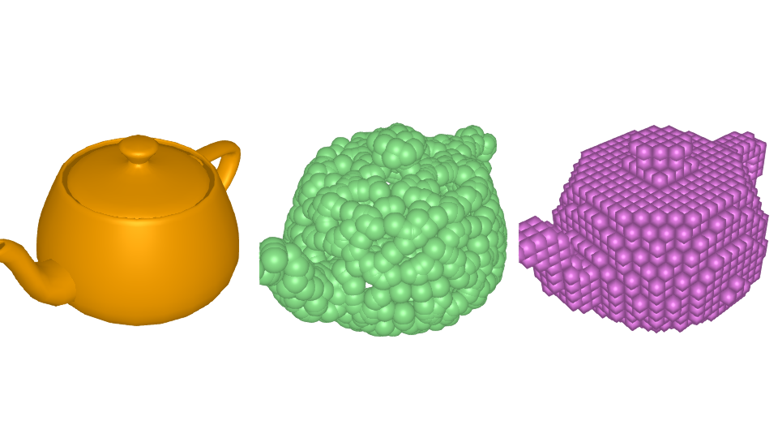

Vusualize functions
Rendering of 3D structure is done using Makie. Therefore, for visualization purpose we will be required to install Makie and compatible backend (GLMakie or WGLMakie). To install it simply run ] add Makie in the julia prompt.
Example
julia> using Flux3D, Makie
julia> Makie.set_theme!(show_axis = false, scale=false)
julia> m = load_trimesh("teapot.obj")
TriMesh{Float32, UInt32, Array} Structure:
Batch size: 1
Max verts: 1202
Max faces: 2256
offset: -1
Storage type: Array
julia> p = PointCloud(m)
PointCloud{Float32} Structure:
Batch size: 1
Points: 1000
Normals 0
Storage type: Array{Float32,3}
julia> v = VoxelGrid(m)
VoxelGrid{Float32} Structure:
Batch size: 1
Voxels features: 32
Storage type: Array{Float32,4}
julia> vbox(visulize(m), visualize(p), visualize(v))
Visualize
Flux3D.visualize — Functionvisualize(pcloud::PointCloud; kwargs...)Visualize PointCloud pcloud at index.
Dimension of points in PointCloud pcloud must be 3.
Optional Arguments:
- color (Symbol) - Color of the marker, default
:blue - markersize (Number) - Size of the marker, default
npoints(pcloud)/5000
visualize(m::TriMesh, index::Int=1; kwargs...)Visualize mesh at index in TriMesh m.
Optional Arguments:
- color (Symbol) - Color of the marker, default
:red
visualize(v::VoxelGrid, index::Int=1; kwargs...)Visualize voxel at index in VoxelGrid v.
Optional Arguments:
- color (Symbol) - Color of the marker, default
:red